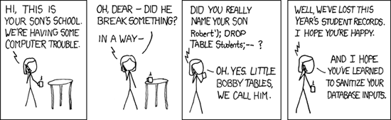

SearchTable Of ContentsPrevious topic把数据存储到Session(Storing data in Session) Next topicThis Page |
Filtering and Sanitizing¶对用户输入的数据进行过滤/消毒是软件开发的重要组成部分。过分信任或忽略过滤用户输入，可能导致用户访问到未经授权的页面，主要是用户数据，甚至是你应用程序的服务器托管的所有内容。

Full image (from xkcd) Phalcon\Filter 组件提供了一组常用的用于过滤以及处理用户输入数据的助手工具。它提供了一种面像对象的方式来包装PHP filter扩展。 Sanitizing data¶Sanitizing 处理从字符串中移除指定字符，这并不是必须的，需要开发者明确指定。sanitizing后的用户输入数据，能确保应用程序的完整和安全。 <?php
$filter = new \Phalcon\Filter();
// returns "someone@example.com"
$filter->sanitize("some(one)@exa\mple.com", "email");
// returns "hello"
$filter->sanitize("hello<<", "string");
// returns "100019"
$filter->sanitize("!100a019", "int");
// returns "100019.01"
$filter->sanitize("!100a019.01a", "float");
Sanitizing from Controllers¶你可以在控制器中访问 Phalcon\Filter 对象，当需要访问GET或POST输入数据时(通过request对象)。第一个参数是变量的名称，第二个参数是filter类型。 <?php
class ProductsController extends \Phalcon\Mvc\Controller
{
public function indexAction()
{
}
public function saveAction()
{
// Sanitizing price from input
$price = $this->request->getPost("price", "double");
// Sanitizing email from input
$email = $this->request->getPost("customerEmail", "email");
}
}
Filtering Action Parameters¶下面的示例将向你展示如何在controller/action中 sanitize Action的参数： <?php
class ProductsController extends \Phalcon\Mvc\Controller
{
public function indexAction()
{
}
public function showAction($productId)
{
$productId = $this->filter->sanitize($productId, "int");
}
}
Filtering data¶除了sanitizing功能，Phalcon\Filter 还提供了删除或修改输入数据的过滤功能，以生成我们想要的数据。 <?php
$filter = new \Phalcon\Filter();
// returns "Hello"
$filter->filter("<h1>Hello</h1>", "striptags");
// returns "Hello"
$filter->filter(" Hello ", "trim");
Filters内置类型¶The following are the built-in filters provided by this component:
自定义Filters¶你可以创建自定义过滤器添加到 Phalcon\Filter。过滤函数可以使用匿名函数的形式： <?php
$filter = new \Phalcon\Filter();
//Using an anonymous function
$filter->add('md5', function($value) {
return preg_replace('/[^0-9a-f]/', '', $value);
});
//Sanitize with the "md5" filter
$filtered = $filter->sanitize($possibleMd5, "md5");
或者，如果你愿意，你也可以实现一个过滤器类： <?php
class IPv4Filter
{
public function filter($value)
{
return filter_var($value, FILTER_VALIDATE_IP, FILTER_FLAG_IPV4);
}
}
$filter = new \Phalcon\Filter();
//Using an object
$filter->add('ipv4', new IPv4Filter());
//Sanitize with the "ipv4" filter
$filteredIp = $filter->sanitize("127.0.0.1", "ipv4");
Complex Sanitizing and Filtering¶PHP本身也提供了一个极好的filter扩展，查阅文档：Data Filtering at PHP Documentation Implementing your own Filter¶The Phalcon\FilterInterface interface must be implemented to create your own filtering service replacing the one providing by Phalcon. |